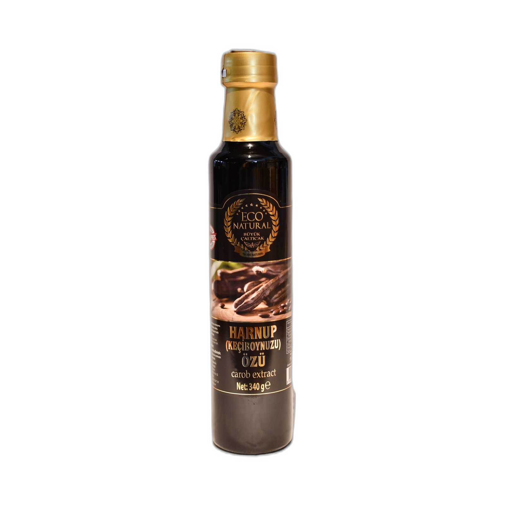

Pratik lezzet — keçiboynuzu ekstraktının porsiyonu
Keçiboynuzu ekstraktı, pratik paketinde aynı tatlı tat ve besleyici değerleri sunar. Türkiye'nin seçili bölgelerinden üretilen bu 340 gram paketçik, porsiyonlar için ideal bir boyuttur.
Keçiboynuzunun doğal tatı ve güzel dokusu, tatlı yemekler ve içecekler için çok yönlü kullanım sağlar. Aile aşçıları ve professioneller tarafından aynı şekilde tercih edilen bu ekstrak, her mutfağa uygun.